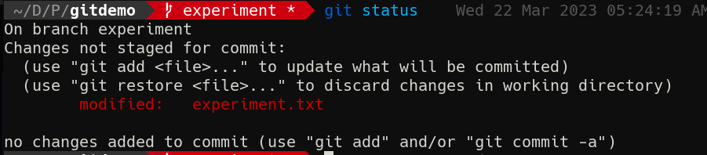
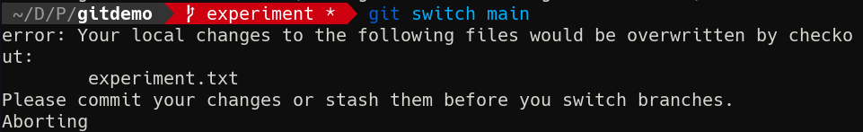
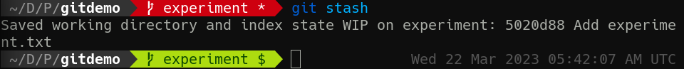
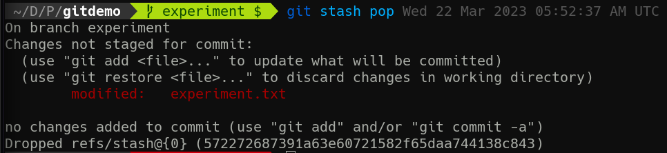
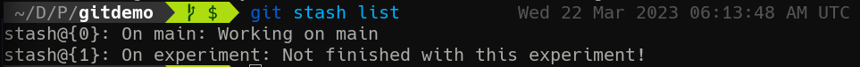

2-2: Hanging Onto Changes
Let's switch back over to our experiment branch. You can do so with either git switch or git checkout. I tend to use git checkout, but that's because I'm a thousand years old.
Anyway, once we're there, let's add some content to experiment.txt
echo "Work in progress" >> experiment.txt
Now of course git status shows we have unstaged changes.

Alright well that's enough experimenting for today! Now back to work on the main branch.
git switch main
Wait, what?!

You can't leave with uncommitted changes! This is actually where git checkout makes sense as a metaphor. You can't leave the store with items you didn't pay for! Also, I love how the error message still says checkout, even when we use git switch.
We're told we have 2 options: commit our changes or "stash" them. Stash them where? Under the floorboards? In a shoebox under the bed?
Yeah so, it turns out that git saw this problem coming. You're working on something, you're not ready to commit, but you need to switch branches. What should you do? Git comes with a place to store work-in-progress changes before you commit them: the stash.
The Stash
git stash --help, as usual, gives more detail than is immediately useful without context, so let's start playing around. Try just:
git stash
You should see something like:

If you cat experiment.txt, you'll see that the new line has disappeared. But it's not gone forever; it's just in the stash! Let's bring it back.
git stash pop

The unique part of this status message is the Dropped refs... at the bottom. This is telling us that we just removed a reference from the stash and reapplied it to our working tree.
Let's put the changes back in the stash, but this time, we'll do so with the push command. We'll also provide a custom message rather than the default "WIP" one Git makes for us.
git stash push -m "Not finished with this experiment!"
Before bringing our changes back again, let's run git stash list. This shows the existing changes in the stash. Yes, you can have more than one. To prove it, let's move back over to main and make some unstaged changes.
git checkout main
echo "Putting the work in" >> file2.txt
git stash push -m "Working on main"
Now, try git stash list again.

See? We can have multiple changes stashed—even across branches!
Let's head back over to experiment with git checkout -. How do we get the right stash entry back out?
git stash pop takes an optional --index argument that refers to the number inside the {} characters in git stash list. So:
git stash pop --index 1
Will reapply the proper changes to our branch. Let's finish up here.
echo "Done...for now" >> experiment.txt
git commit -am "Finish WIP experiment"
Now, we don't really need that other stashed change from main anymore. We can remove it from the stash with git stash drop. This command can also be used with an index number, similar to pop, if we have multiple stash entries.
And that's it for hanging on to work in progress changes! Up next, we'll cover joining two branches together again.
Check For Understanding
Create a new branch. Then, make some unstaged changes. Stash them and switch back to main. Move back to your new branch and reapply the changes. Switch back to main again. Repeat until you can do this without looking up the commands!